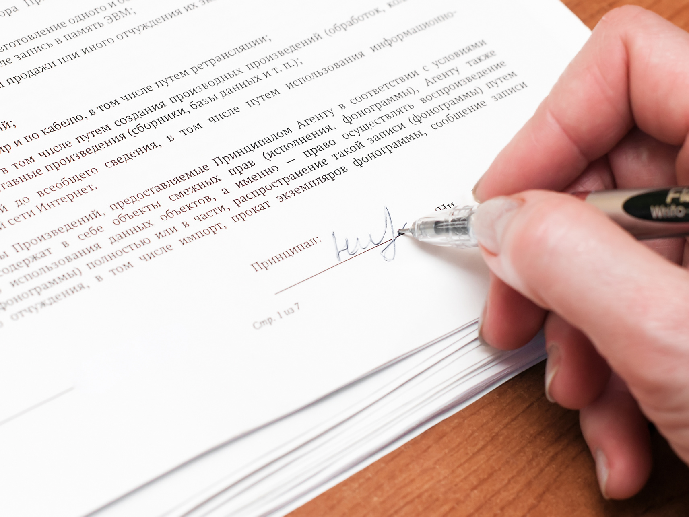

Свидетельствование подлинности подписи бывает необходимо и физическим, и юридическим лицам в самых разных ситуациях. Засвидетельствовать подлинность подписи можно практически на любом подписываемом документе. Свидетельствование подлинности подписи на документах необходимо, если требуется официально подтвердить, что документ подписан определённым лицом, как в случаях, прямо предусмотренных законом, так и в иных случаях. В частности, распространено свидетельствование подлинности подписи в ситуации, когда подписант не может лично подтвердить получателю документа его подписание (при отправке заявления или иного документа по почте, с доверенным лицом и др.).
Для физических лиц эта услуга актуальна, в частности, в случае, когда дело касается заявлений по наследственным делам (о принятии наследства, отказе от него и других), пересылаемых по почте или иным способом передаваемых нотариусу без личной явки заявителя, при подписании учредителем юридического лица заявления о регистрации юридического лица при создании (если учредитель не намерен лично представить данное заявление в органы ФНС России) и в ряде других случаев.
Для юридических лиц необходимость свидетельствования подлинности подписи является неотъемлемым этапом деятельности. Так, подлинность подписи свидетельствуется на заявлениях и уведомлениях в ФНС России в связи с регистрацией юридических лиц (в том числе изменений в сведения о юридическом лице, в его учредительных документах и др.), на банковских карточках (если их не заверяет сам банк) и т. д.
В соответствии с требованиями статей 42 и 43 Основ нотариус, прежде чем засвидетельствовать подлинность подписи, обязан установить личность гражданина, чья подпись свидетельствуется, и проверить полномочия представителя, если за совершением этого действия обратился представитель физического или юридического лица. В этих целях нотариус проверяет документы, удостоверяющие личность гражданина (чаще всего это паспорт; удостоверяющие личность документы представляются только в подлиннике), а также документы, удостоверяющие полномочия представителя физического или юридического лица.
Документы, необходимые для свидетельствования подлинности подписей:
Для гражданина (физического лица):
- паспорт или иной документ, удостоверяющий личность.
Для представителя физического лица:
- паспорт или иной документ, удостоверяющий личность;
- документ о полномочиях представителя: свидетельство о рождении несовершеннолетнего ребёнка до 14 лет — для его родителей; документ о назначении опеки — для опекунов; доверенность или иная сделка, содержащая в себе доверенность, — в большинстве остальных случаев.
Для представителя российского юридического лица:
- паспорт или иной документ, удостоверяющий личность;
- основной учредительный документ (обычно устав) организации — оригинал, копия, заверенная налоговым органом, либо копия, засвидетельствованная нотариально;
- выписка из реестра юридических лиц (ЕГРЮЛ). Её может также получить и сам нотариус, если в момент обращения к нему работает сервис ФНС России по предоставлению электронных выписок из ЕГРЮЛ;
- протокол, решение или иной документ (в соответствии с положениями устава о назначении на должность единоличного исполнительного органа организации);
- приказ о назначении на должность главного бухгалтера, а также других должностных лиц, подписи которых необходимо засвидетельствовать в нотариальном порядке;
- в случае свидетельствования подлинности подписи представителя управляющей организации — аналогичные документы управляющей организации и договор об управлении.
В случае, если свидетельствуется подлинность подписи представителя иностранного юридического лица, нотариус проверяет полномочия представителя, исходя из той системы подтверждения полномочий, которая принята в соответствующем государстве. В числе подтверждающих документов могут быть различного рода выписки из торговых, коммерческих и прочих реестров; свидетельства, выдаваемые компетентными органами, протоколы заседаний органов юридических лиц, доверенности, договоры и др.
Свидетельствуя подлинность подписи, нотариус не удостоверяет факты, изложенные в документе, и законность его содержания, а только подтверждает, что подпись сделана определённым физическим лицом.